m1 <- inla(
formula = ESPI ~ porcentaje_pasturas + f(id_region, model = 'iid'),
family = 'gaussian',
data = data,
control.compute = list(dic = TRUE, waic = TRUE),
)Mónica Balzarini, Pablo Paccioretti
Octubre, 2022
\[Y = Valor\ Esperado + Error\]
\[Y = Modelo\ de\ Media + Modelo\ de\ Varianza\ y \ Covarianza\]
En el Modelo de Media, la respuesta se relaciona linealmente con regresoras y/o variables de clasificación (Modelos de Regresión, Modelos de ANAVA)
El Modelo de varianzas y covarianzas se determina con supuestos distribucionales para los términos de error:
Hay alternativas para corregir la falta de cumplimiento de algunos de estos supuestos.
El cumplimiento de los supuestos no son necesarios para la estimación pero sí para la inferencia, esto significa que el valor-p puede no ser real en caso de incumplimiento de estos.
\[Y_{ij} = \beta_0 + \beta_1 x_{ij}+\varepsilon_{ij}\]
\[\varepsilon_{ij} \sim N \big(0, \sigma^2 \big) \: \: \: cov(\varepsilon_{ij}, \varepsilon_{i^{\prime} j^{\prime}}) = 0 \: \forall ij \neq i^{\prime} j^{\prime}\]
Donde:
Alternativamente la covarianza entre los términos de error puede ser distinta de cero, por ejemplo covarianza positiva expresada como función de la distancia entre observaciones
La respuesta se modela como función de variables explicativas de efectos fijos y de efectos aleatorios.
La correlación se puede abordar de dos formas:
La correlación entre los errores se especifica como función de la distancia espacial entre las observaciones (por ej. correlación espacial exponencial o esférica como modelos para la caída de las correlaciones a medida que aumenta la distancia entre observaciones)
Un modelo jerárquico es un modelo especificado en etapas.
Ejemplo: Modelo lineal mixto con efectos aleatorios \(u\).
\[y \vert \beta, u, \sigma^2 \sim N(x^{\prime} \beta + z^{\prime}u, \sigma^2I) \\ u \sim N(0, D(\theta))\]
No necesariamente normal, no-homogeneidad y no independencia
MLGM permite trabajar datos no normales (por ejemplo variables binarias y conteos) y correlaciones, a través de la incorporación de efectos aleatorios. Es un modelo Jerárquico
Frecuentista
Relacionan la variable respuesta con variables explicativas a través de parámetros desconocidos. Los parámetros son constantes que se estiman con determinada confianza.
Bayesiano
Relacionan la variable dependiente con variables explicativas a través de parámetros desconocidos. Los parámetros se interpretan en término de probabilidades bayesianas; se supone una distribución “a priori” para cada parámetro y se deriva la distribución “a posteriori” de cada parámetro y para la predicción de Y.
Se utiliza Máxima Verosimilitud (ML) o Máxima Verosimilitud Restringida (REML).
Se estiman los parámetros de la estructura de media (coeficientes de regresión) y los parámetros de varianza y covarianza asociados a los términos de error (varianza nugget, varianza del proceso con datos independientes y rango).
Los errores estándares se ajustan por correlación espacial.
Con muchos datos, la computación de distancias y de la verosimilitud es costosa. Se deben usar otros métodos de estimación.
La información previa sobre los parámetros se resumen en distribuciones de probabilidad (distribuciones a priori) a partir de las cuales se estima la distribución de probabilidad a posteriori dadas las observaciones.
La estimaciones puntuales de los parámetros de interés se obtienen calculando medidas resumen de la distribución a posteriori.
Se informan intervalos de credibilidad calculados desde percentiles de la distribución a posteriori.
La credibilidad se interpreta como la probabilidad de que el valor estimado para el parámetro pertenezca al intervalo reportado, dado los datos observados
Los datos \(Z\) tienen una distribución condicional dado el proceso latente que los ha generado \(Y\), que a su vez tiene una distribución condicional a ciertos parámetros \(\theta\) y \(\theta\) tiene a su vez una distribución “a priori”.
Modelo para los datos Modelo para el proceso Modelo para los parámetros |
\(\left[ Z \big\vert Y, \theta \right]\) \(\left[ Y \big\vert \theta \right]\) \(\left[ \theta \right]\) |
En un modelo bayesiano, los parámetros se consideran variables aleatorias y tienen distribuciones a priori. Continuando con el ejemplo anterior:
\[\beta \sim \pi (\beta)\]
En el modelo jerárquico bayesiano, los parámetros de las distribuciones a priori de los parámetros (llamados hiperparámetros) también se consideran variables aleatorias, y también tienen ditribuciones a priori.
\[\sigma^2 \sim \pi (\sigma^2)\]
El predictor lineal contiene el intercepto, los efectos de las covariables y funciones desconocidas \(f^{(k)}\) que incluyen los efectos aleatorios:
\[\eta_i = \mu + \sum_{j}{\beta_j z_{ij}} + \sum_{k}{f^{(k)}u_{ik}}\]
Los componentes del predictor lineal forman un campo latente \(x=(\eta, \mu, \beta, f)\). Además de los parámetros de la verosimilitud, también habrá hiperparámetros \(\theta\). En un MLG, todos los componentes del predictor lineal deben tener distribuciones a priori gausianas, pero \(\theta\) puede tener distribuciones a priori no gausianas.
El MLG se puede escribir formalmente como:
\[y \vert x, \theta \sim \prod \pi (y_i \vert \eta_i, \theta) \\ x \vert \theta \sim N(0, Q^{-1}(\theta)) \\ \theta \sim \pi(\theta)\]
Las distribuciones a posteriori de los modelos bayesianos no suelen estar disponibles analíticamente y usualmente se encuentran con métodos de simulación por cadenas de Markov Monte Carlo (MCMC) (Besag et al., 1995). Estos métodos han permitido resolver modelos complejos sin la necesidad de imponer estructuras que lo simplifiquen. Pero, el método MCMC conlleva alta demanda computacional. Rue et al (2009) propusieron una alternativa para aproximar la distribución a posteriori en contextos de datos espaciales. La simplificación se produce por el supuesto de existencia de un campo aleatorio gaussiano markoviano (las correlaciones espaciales sólo dependen de los sitios en el vecindario).
INLA (Integrated Nested Laplace Approximations; Rue, Martino y Chopin, 2009) es un método que permite estimar la distribución marginal a posteriori de los parámetros. INLA permite la inferencia bayesiana de los Modelos Gaussianos Latentes.
INLA es más rápido que MCMC porque el campo latente al que referencia es un campo aleatorio gaussiano de Markov (GMRF) y por tanto tiene matriz de precisión rala, lo que permite a INLA utilizar métodos numéricos para matrices ralas, que son más eficientes.
La estimación de INLA requiere la construcción de una grilla espacial (mesh). La grilla es una colección de elementos geométricos (trángulos) que divide el espacio dimensional que contiene los sitios con observaciones a partir de la cual se estima la dependencia espacial de la variable respuesta.
La estimación de las covarianzas de los efectos de sitio se hacen a través de funciones de suavizado impuestas sobre la grilla espacial. La aproximación SPDE (Stochastic Partial Differential Equation), agiliza el cómputo ya que la solución se presenta como una matriz de covarianza de Mátern.
INLA puede ser usado para estimar modelo jerárquicos para datos espaciales con variable de respuesta normal, binaria, binomial, conteos, es decir, en el contexto de Modelos Lineales Generalizados Mixtos
Se tiene una respuesta continua ESPI (Ecosystem Services Provisioning Index) observada en el territorio de la Cuenca del Carcarañá. El territorio está dividido en 4676 unidades de área de 1400 Has. cada una. Se dispone además de la covariable “Porcentaje de Pasturas Naturales Manejadas” en cada unidad de área.
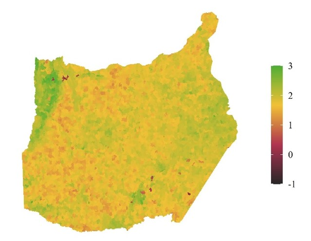
| Región | ESPI | %PasturaNaturalManejada |
|---|---|---|
| 1 | 2.11 | 1.90 |
| 2 | 1.35 | 0.20 |
| 3 | 1.84 | 19.33 |
| 4 | 2.04 | 60.08 |
| … | … | … |
| 4676 | 2.13 | 62.57 |
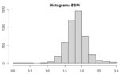
Vamos a modelar el ESPI en función del porcentaje de pasturas en cada región \(i\) utilizando una regresión lineal bayesiana con efectos aleatorios de sitio iid
\[y_i \sim N \big(\mu, \tau_{\varepsilon}^{-1} \big)\]
\[E \left[ y_i \right] = \beta_0 + \beta_1 \times Porc.Pasturas_i + \mu_i\]
\[u_i \sim i.i.d \ N \big(0, \tau_{u}^{-1} \big)\]
En la regresión bayesiana, los parámetros \(\beta_0\) y \(\beta_1\) tienen distribuciones a priori y en el jerárquico bayesiano, los hiperparámetros \(\tau_{\varepsilon}^{-1}\) y \(\tau_{\mu}^{-1}\) también.
Por defecto, INLA asigna distribuciones a priori no informativas \(N(0, 10e^5)\) para \(\beta_0\) y \(\beta_1\), y \(Gamma(0, 10e^5)\) para \(\tau_{\varepsilon}^{-1}\) y \(\tau_{u}^{-1}\)
Como sólo se tiene un nivel de observaciones y la respuesta es gaussiana, agregar efectos iid solo equivale a redistribuir la varianza entre el efecto aleatorio y el error de las observaciones.
Corremos el modelo en INLA:
Al efecto aleatorio iid lo incluimos en la fórmula con f(id_region, model = 'iid').
Con control.compute le pedimos a INLA que calcule los criterios de información DIC y WAIC (menores = mejores).
Distribuciones a posteriori de los coeficientes de regresión:
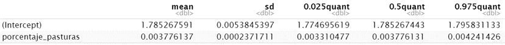
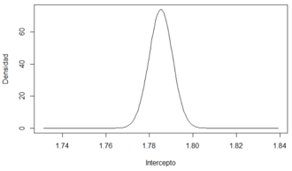
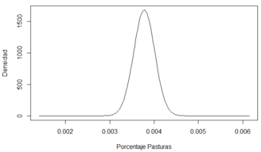
Distribuciones a posteriori para los hiperparámetros (escala de precisión \(\tau\))
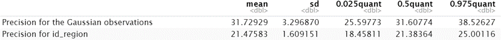
Gráfico en la escala de la desviación estándar \(\sigma\)
\[\sigma^2 = \frac{1}{\tau}\]
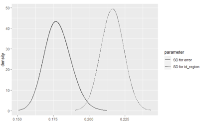
Gráficos con los predichos y las observaciones, calculando el predicho puntual como la moda de la distribución a posteriori de los predichos:
DIC: 88 | WAIC: -43
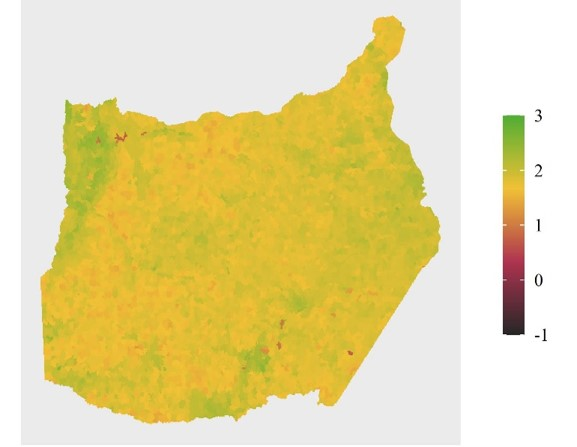
En vez de utilizar efectos aleatorios normales e idéndticamente distribuídos, podríamos utilizar efectos aleatorios con estructura espacial explícita.
Un ejemplo clásico apra datos areales son los efectos con estructura Intrinsic Conditional Autoregressive o ICAR (Besag, 1974):
\[u_i \vert u_{-1} \sim N \Big( \frac{1}{N_1} \sum_{j=1}^{n} a_{ij} u_j, \frac{1}{\tau_u N_i} \Big)\]
donde \(a_{ij} \ne 0\) si y solo si las áreas \(i\) y \(j\) son vecinas, \(N_i\) es la cantidad de áreas vecinas del área \(i\), \(u_{-1}\) se asume \(\sum_{j=1}^{n} u_i = 0\)
Hay distintas maneras de definir cuándo dos áreas son vecinas y qué peso tomará \(a_{ij}\) cuando lo son. Por ejemplo, podríamos tomar que son vecinas cuando se tocan al menos en un punto, y que \(a_{ij} = 1\) cuando son vecinas.
Vamos a modelar el ESPI en función del porcentaje de pasturas en cada región \(i\) utilizando una regresión lineal bayesiana con efectos aleatorios espaciales ICAR:
\[y_i \sim N \big(\mu, \sigma_{\varepsilon}^{-2} \big)\]
\[E \left[ y_i \right] = \beta_0 + \beta_1 \times Porc.Pasturas_i + u_i\]
\[u_i \vert u_{-1} \sim N \Big( \frac{1}{N_1} \sum_{j=1}^{n} a_{ij} u_j, \frac{1}{\tau_u N_i} \Big)\]
Definimos un grafo con los vecindarios de cada región:
Corremos el modelo en INLA:
Le pasamos el grafo al modelo en f(…, graph = vecindario).
Distribuciones a posteriori de los coeficientes de regresión:
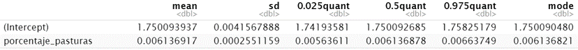
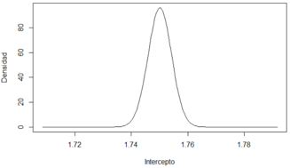
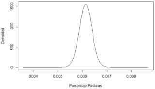
Distribuciones a posteriori para los hiperparámetros (escala de precisión \(\tau\))
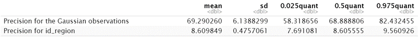
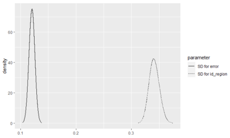
El desvio estandar del efecto aleatorio podría tener mayor magnitud que el desvío estándar del ESPI observado, que era 0.287.
Gráficos con los predichos y las observaciones, calculando el predicho puntual como la moda de la distribución a posteriori de los predichos:
DIC: -3783 | WAIC: -3862
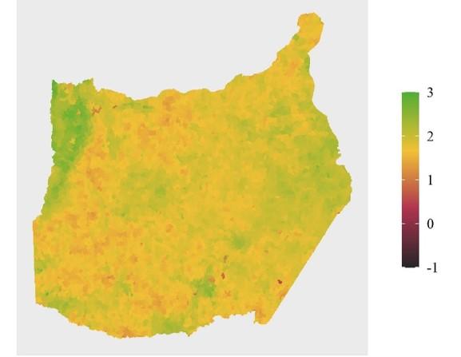
Entre estos ajustes, el modelo ICAR proporcionó menores DIC y WAIC. Ademas, en los mapas de predichos se observa que el ICAR logra captar el detalle de las regiones con ESPI bajo, algo que el iid no logró.
En un modelo con efecto aleatorio de sitio y efecto aleatorio residual separables podrían usarse distintos modelos para los distintos efectos aleatorios. Por ejemplo ICAR para el efecto sitio e i.i.d para el residual
\[Y_i \sim Poisson(\theta_i) \ \ \ \ i = 1, \dots, n\]
\[log(\theta_i) = \beta_0 + \beta_1 \times x_i + \dots + u_i + \nu_i\]
\[u_i \vert u_{-i} \sim N \Bigg( \bar{u}_{\delta_i}, \frac{\sigma_{u}^{2}}{\eta_{\delta_i}} \Bigg) \]
\[\nu \sim N(0,\sigma_{\nu}^2)\] Tasa estandarizada de incidencia (SIR) \[SIR_i = \frac{Y_i}{E_i}\]
Riesgo Relativo (RR) con datos espaciales
Relación entre la probabilidad de que ocurra el evento en el sitio y la probabilidad de que el mismo evento ocurra en otro sitio.